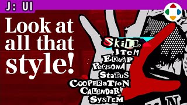
速览
UI 是用户界面的意思，在游戏中指菜单、画面上出现的数字等显示类的东西。其实手柄也可说是 UI 的一部分，但先放一边，这个 UI 分类讲画面显示上的 UI 制作。说实话，易懂的 UI 与风格性高的 UI，也许可以说是相反的东西——不，「风格高」这个词本身就因人的价值观而异，不能一概而论。还是最好懂的例子是《女神异闻录》系列吧：非常时尚的 UI 构成，作为时尚 UI，他认为是遥遥领先的第一作品。但说实话很难说整齐，一眼难懂，可能还会让人头晕。UI 可以说是抽屉，抽屉当然越好懂越整齐越好；但因为方便就让《P5》用规矩的菜单构成，那就太讨厌了吧？依游戏，装进抽屉的东西的多少差别很大。也就是说，不能断言单纯好懂就是好 UI、难懂就是坏 UI，要在各个游戏中配合目的。他的作品服务太多，抽屉和装的东西太多，UI 也苦战；建造类作品在庞大的行李整理上也会迷惑——这也是 UI。想来《我的世界》中很多人建仓库，这近乎自己建文件夹的行为。但即便如此，各个菜单仍有应下功夫的地方：视线诱导、显示要素的大小、用窗口化建立关联、亮度和饱和度、选择合适的字体等。便利性与风格各有应优先的地方，但没有正解，所以要按照游戏的内容和世界来设计；在此之上能更亲切的话就没话说了。
1. UI 分类开篇 0:04
UI 是用户界面的意思，在游戏中指菜单、画面上出现的数字等显示类的东西。
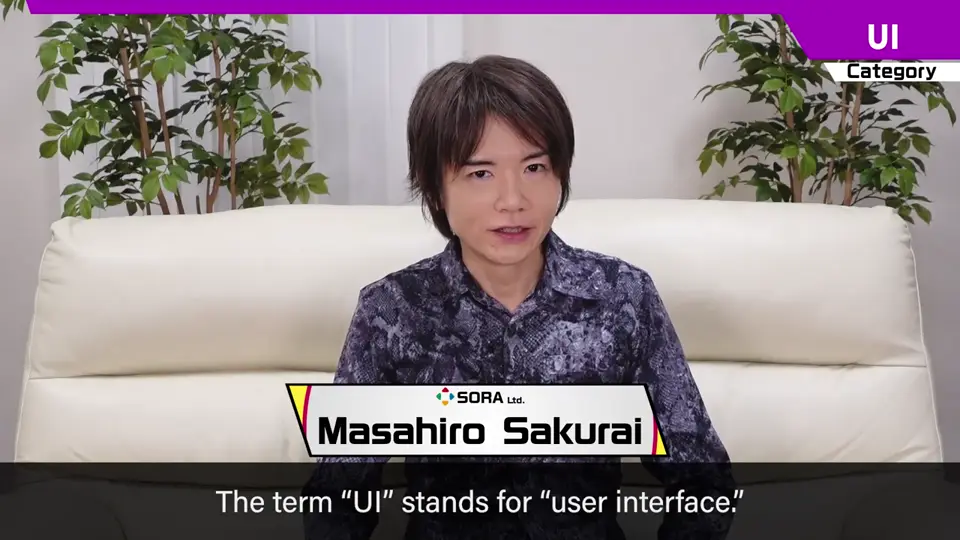
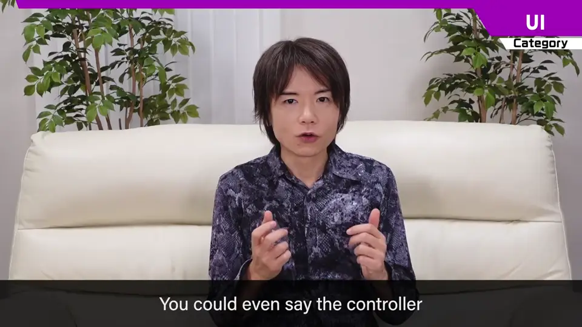
手柄也可说是 UI 的一部分，但先放一边，这个分类讲画面显示上的 UI 制作。
2. 易懂 vs 风格 0:34
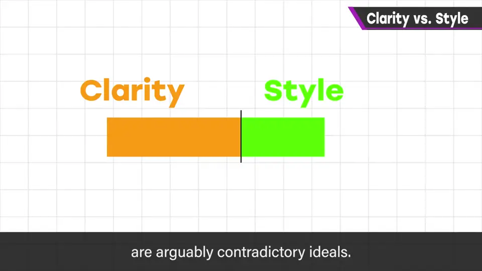
不过「风格高」这个词本身就因人的价值观而异，不能一概而论。
3. 《女神异闻录》 0:48
最好懂的例子是《女神异闻录》系列：非常时尚的 UI 构成，作为时尚 UI，他认为是遥遥领先的第一作品。
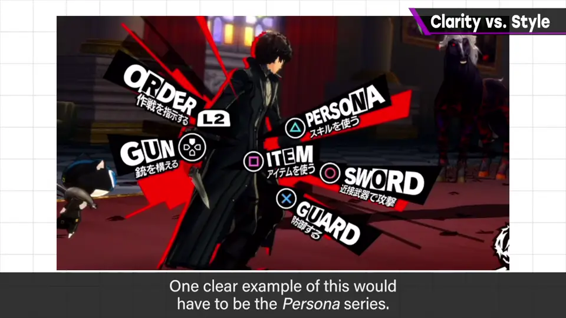
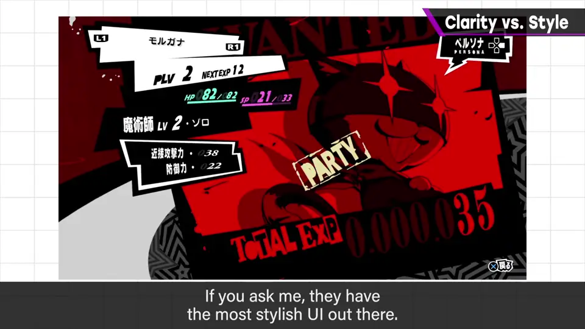
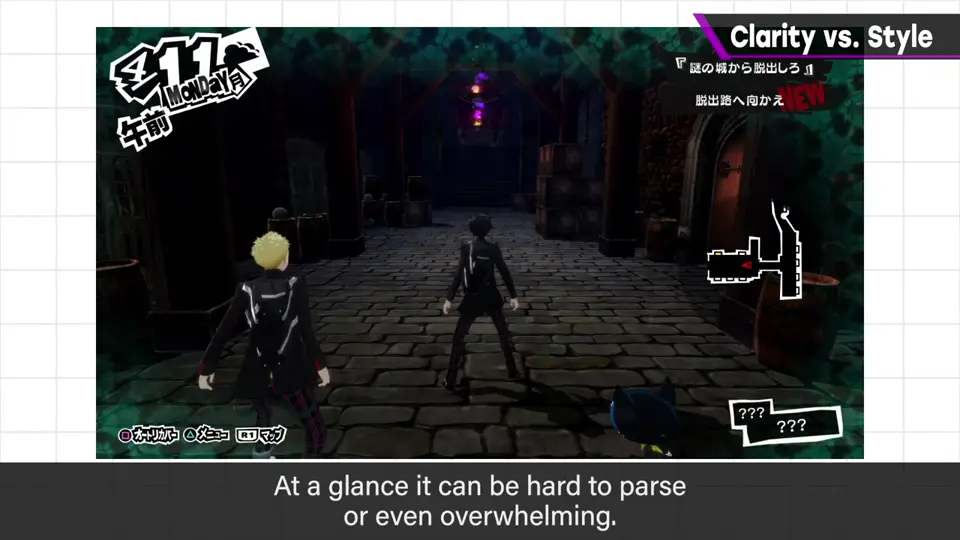
但说实话很难说整齐，一眼难懂，可能还会让人头晕。
4. UI 是抽屉 1:13
UI 可以说是抽屉，抽屉当然越好懂越整齐越好。
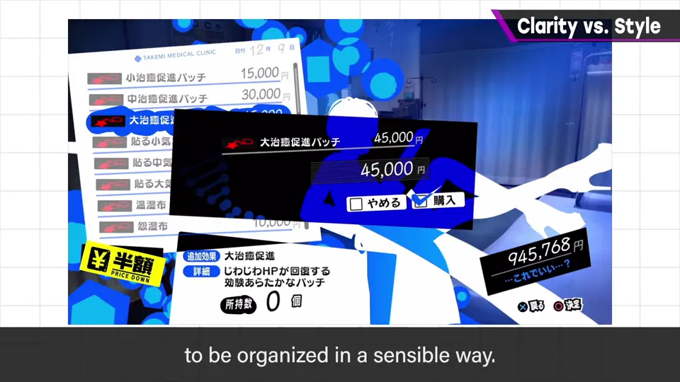
但因为方便就让《P5》用规矩的菜单构成，那就太讨厌了吧？依游戏，装进抽屉的东西的多少差别很大。
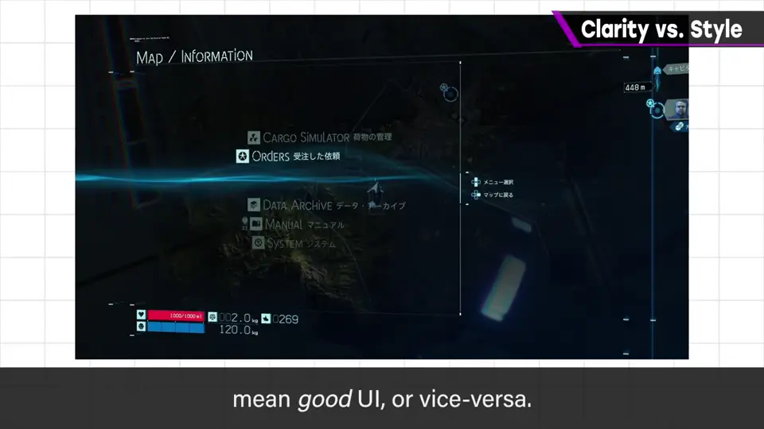
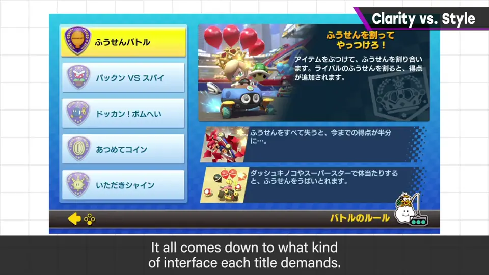
5. 抽屉太满 1:55
他的作品服务太多，抽屉和装的东西太多，UI 也苦战。
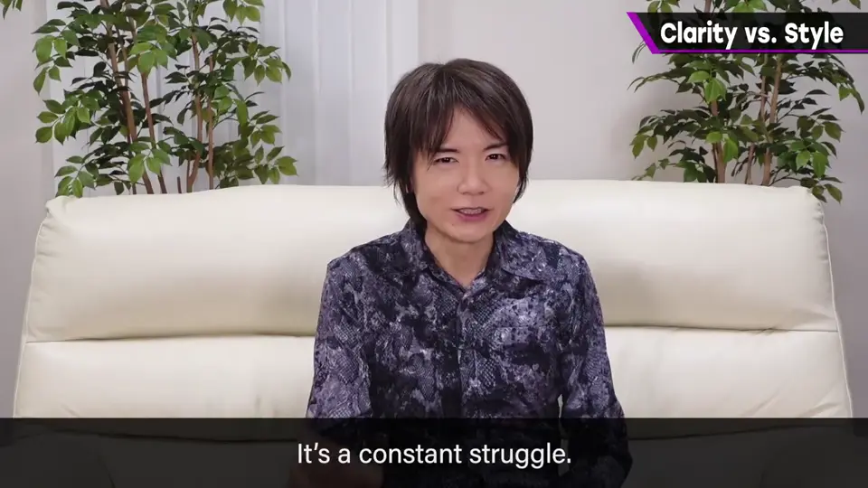
建造类作品在庞大的行李整理上也会迷惑——这也是 UI。《我的世界》中很多人建仓库，这近乎自己建文件夹的行为。
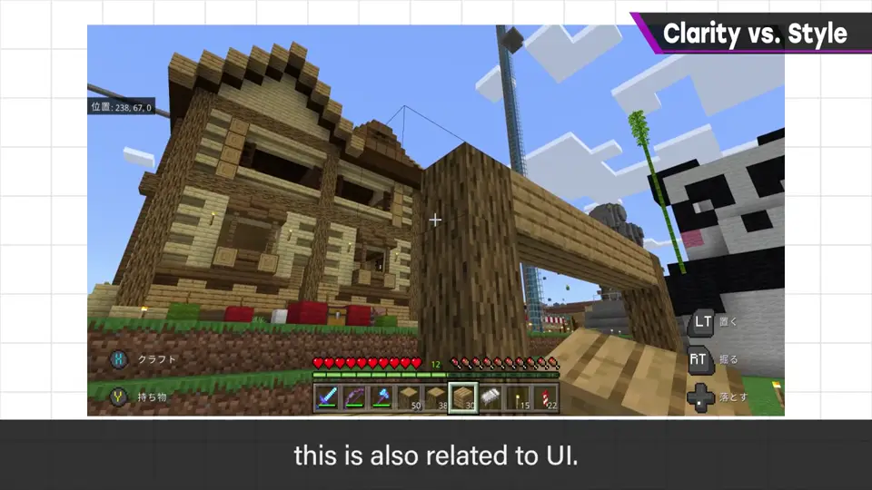
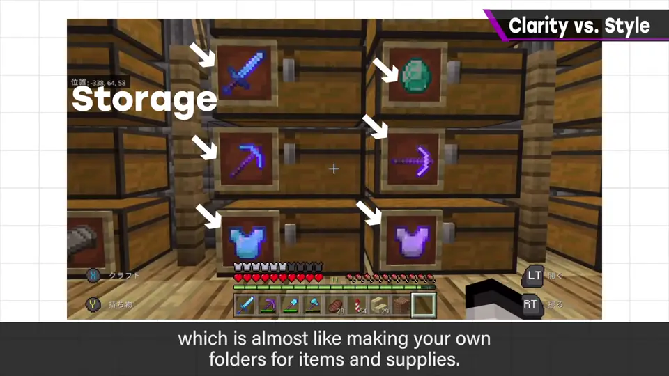
6. 应下功夫之处 2:16
即便如此，各个菜单仍有应下功夫的地方：
- 视线诱导。
- 显示要素的大小。
- 用窗口化建立关联。
- 亮度和饱和度。
- 选择合适的字体。
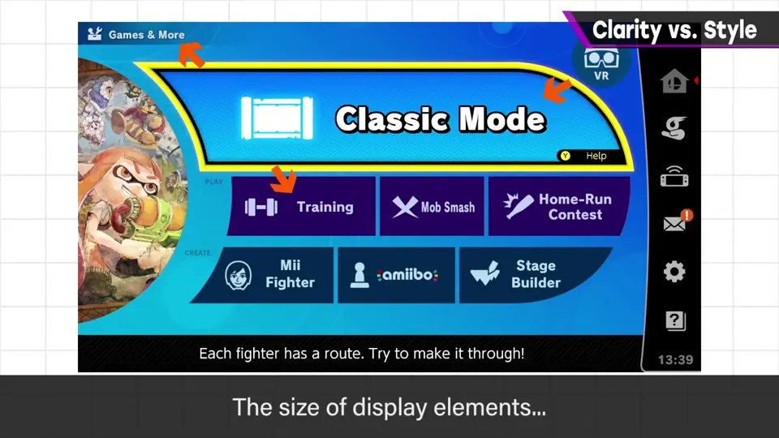
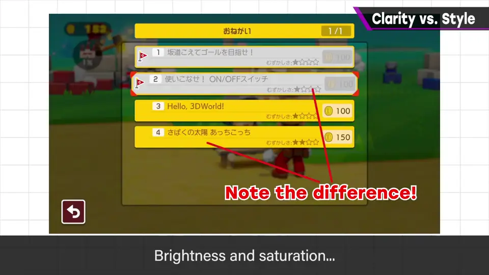
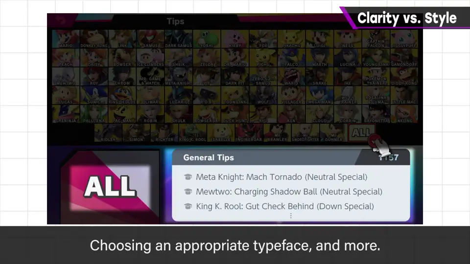
7. 没有正解 2:50
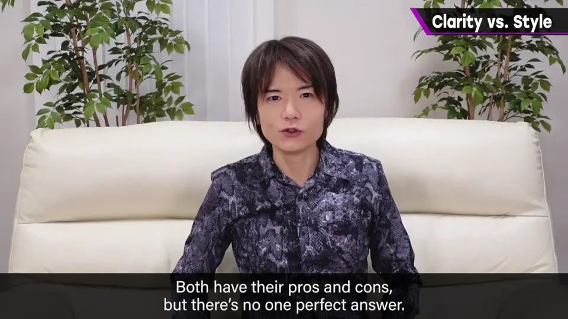
自测题
1. 为什么说易懂和风格可能对立？举例。
《女神异闻录》UI 风格首屈一指，但一眼难懂、难说整齐。 1:00
2. 判断 UI 好坏的标准是什么？
不是单纯好懂与否，而是是否合乎该游戏的目的。 1:40
3. 列举三个菜单应下功夫的地方。
视线诱导、要素大小、窗口关联、亮度饱和度、字体（任选三）。 2:30